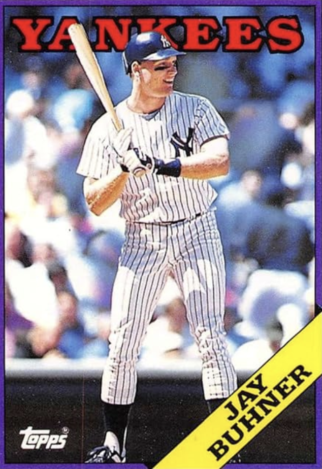

Jay "Bone" Buhner
Career Highlights & Facts
- Part of a famously one-sided trade from the Yankees to the Mariners for Ken Phelps, which was later referenced in an episode of Seinfeld.
- His signature shaved head and goatee led to "Buhner Buzz Cut Night" promotions in Seattle, where fans got free admission for a matching haircut.
- A 1996 All-Star and Gold Glove Award winner, he was a key power-hitter for the beloved 1995 "Refuse to Lose" Mariners team.
- He was inducted into the Seattle Mariners Hall of Fame in 2004.
The Original Clue